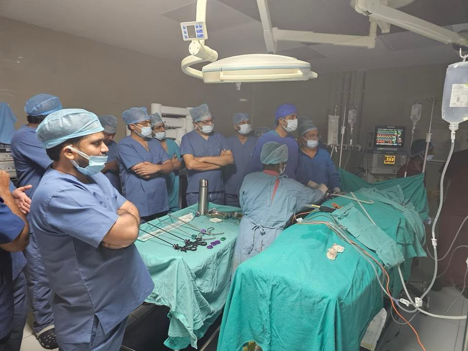
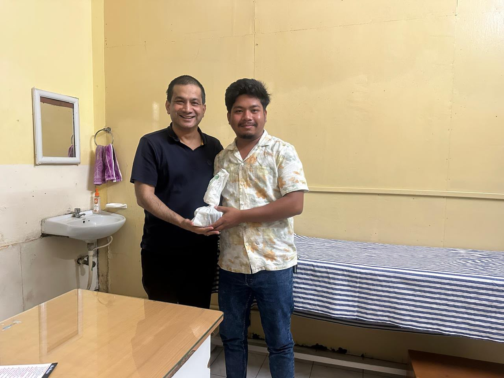
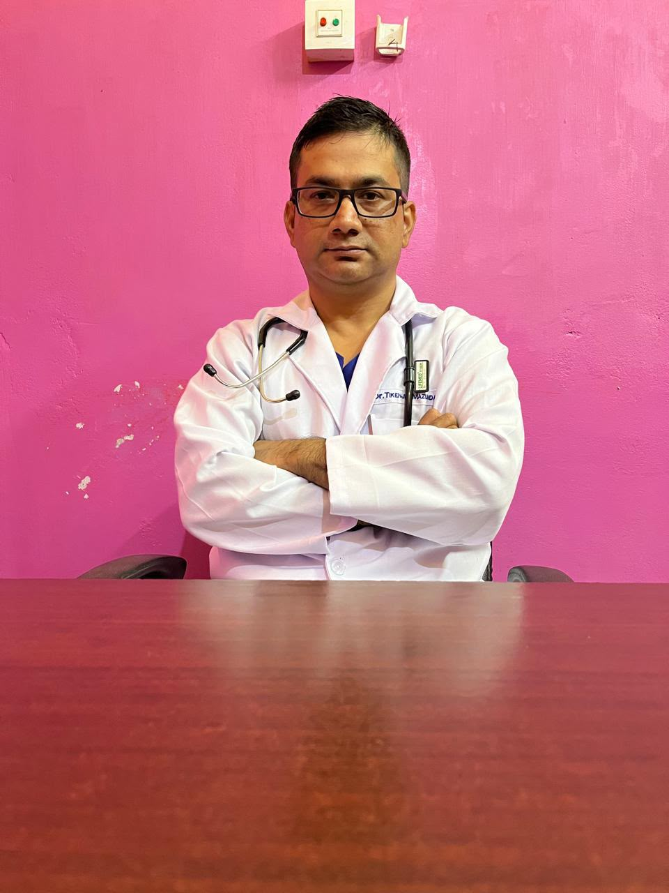
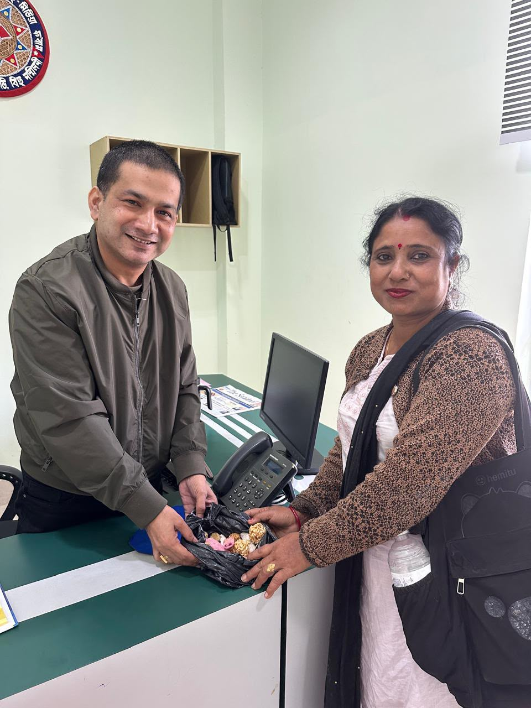
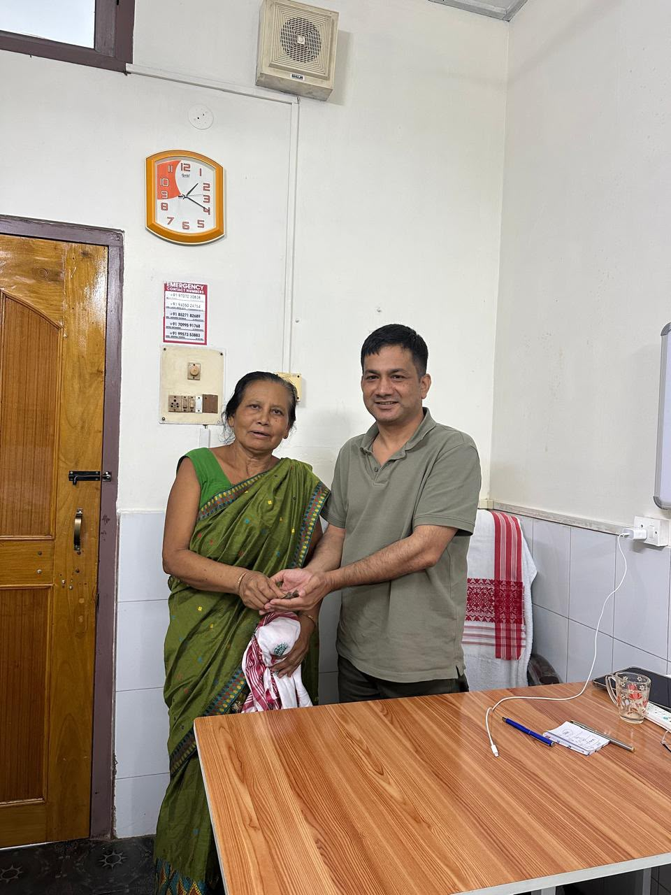
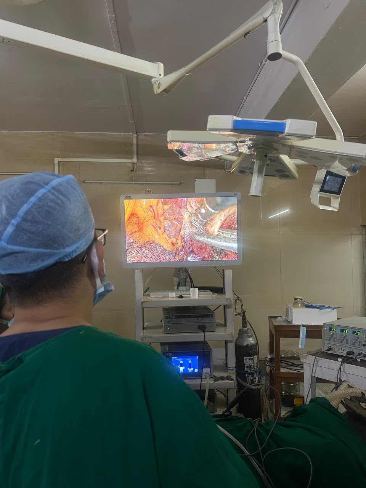

Urology Guide
When Should You See a Urologist?
A urology consultation may be appropriate when urinary or reproductive-system symptoms persist, recur, or need specialist assessment. A urologist can …
Read Article →Patient-friendly urology education covering urinary symptoms, kidney stones, prostate health, uro-oncology, robotic urology and preparation for consultation.
A urology consultation may be appropriate when urinary or reproductive-system symptoms persist, recur, or need specialist assessment. A urologist can …
Read Article →A little preparation can make a specialist appointment more organized. Bring previous medical records and a clear description of your symptoms so the …
Read Article →
Robotic urology is a surgical field that uses a robotic surgical system controlled by a trained surgeon. Whether a robotic approach is appropriate dep…
Read Article →
Kidney stones are hard deposits that can form in the urinary tract. Small stones may pass without major symptoms, while larger stones can cause signif…
Read Article →
Blood in urine is called hematuria. It can be visible or detected only on a urine test. Causes range from infection and stones to prostate or urinary-…
Read Article →
Urinary tract infections can affect different parts of the urinary system. Evaluation may include medical history, examination and urine testing, with…
Read Article →
An enlarged prostate, also called benign prostatic hyperplasia (BPH), can affect urinary flow as men age. Similar symptoms can also occur with other p…
Read Article →
The prostate sits below the bladder and surrounds part of the urethra. Prostate conditions can cause urinary symptoms, but symptoms alone cannot deter…
Read Article →Blood in the urine is a common symptom associated with bladder cancer, but urinary infections, stones and other conditions can also cause blood in uri…
Read Article →
A kidney infection can cause urinary and systemic symptoms and may require prompt medical care. Evaluation can include urine tests, blood tests and im…
Read Article →
Urinary retention means the bladder cannot empty normally. Causes can include blockage, prostate enlargement, medicines, nerve problems and other cond…
Read Article →
Imaging tests can help clinicians evaluate the kidneys, ureters and bladder. Depending on the clinical question, imaging may include ultrasound, CT, M…
Read Article →Use the appointment page for consultation details and hospital location.
Explore articles covering symptoms, preparation for consultation, robotic urology, kidney stones, urinary infections, prostate health, imaging and other common urological topics.
These educational articles are intended to help patients prepare questions and understand when specialist evaluation may be appropriate.